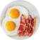
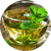
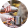
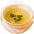

Для кого
костный бульон -
польза для вашего здоровья
польза для вашего здоровья
Как употреблять

Перед завтраком
Пейте костный бульон натощак за 20 минут до завтрака, чтобы усвоить максимум полезных свойств продукта
Вместо кофе
Чашка горячего ароматного бульона — это отличная здоровая альтернатива кофе

Как любимый напиток
Тёплый костный бульон можно пить даже в жару, во избежание перегрева организма и переедания

С собой в дорогу
Разогрейте бульон дома, добавьте в него немного сушеной зелени, залейте в термос и возьмите с собой
Между важными встречами
Легко разогреть в микроволновке, аромат бульона очень деликатный и не помешает окружающим

Перекус на интервальном голодании
Пейте тёплый ProBulion и насыщайтесь полезными микроэлементами, белком и аминокислотами
Видеорецепты
Царь-бульон — залог здоровья
15 гр коллагена и 20 аминокислот помогут вам в оздоровлении кишечника и нормализации обмена веществ,
стимулируют выработкку желудочного сока, а также уменьшат механическое воздействие пищи на слизистые
оболочки кишечника.
Выбрать бульон
- Лучший способ укрепить иммунитет — наладить работу ЖКТ.
- Пейте ProBulion за 20 минут до завтрака ежедневно.
Приготовление костного бульона
Костный бульон ProBulion продлевает ощущение сытости, подавляет голод и является прекрасным блюдом для диеты. В ProBulion нет углеводов и очень мало калорий, поэтому вы можете есть его в любом количестве по вашей потребности.
Выбрать бульон
- LCHF
- Интервальное голодание
- Keto
- Спортивная диета
- Paleo
- АИП